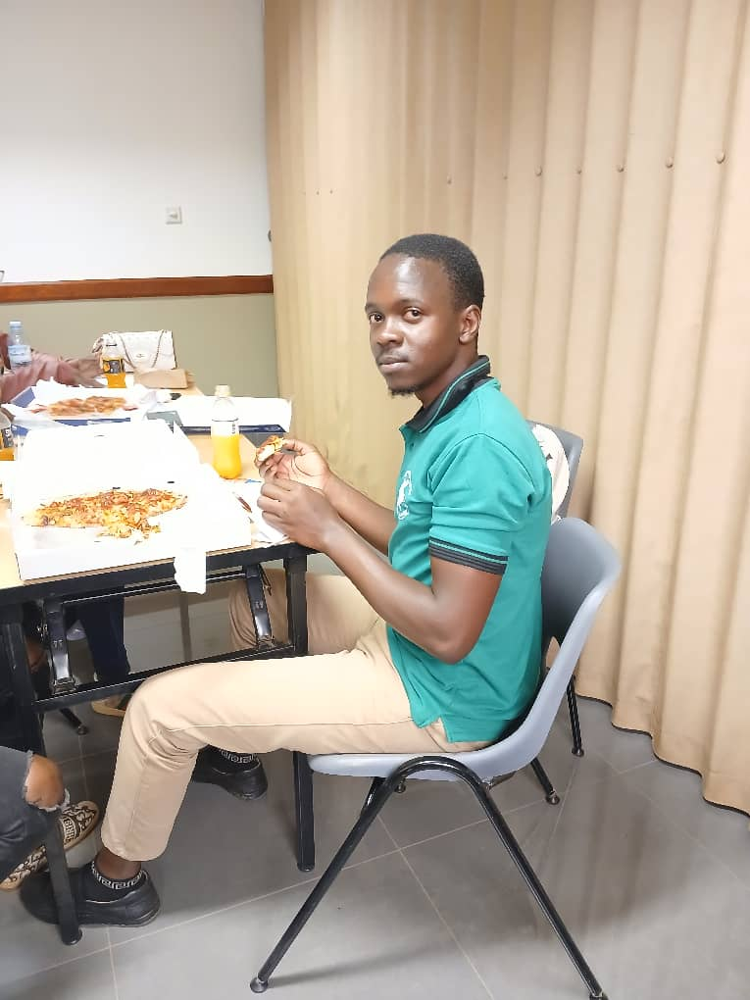
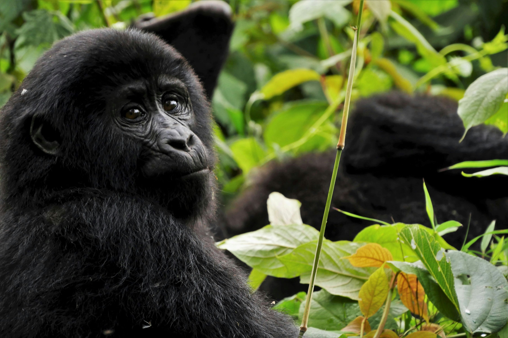
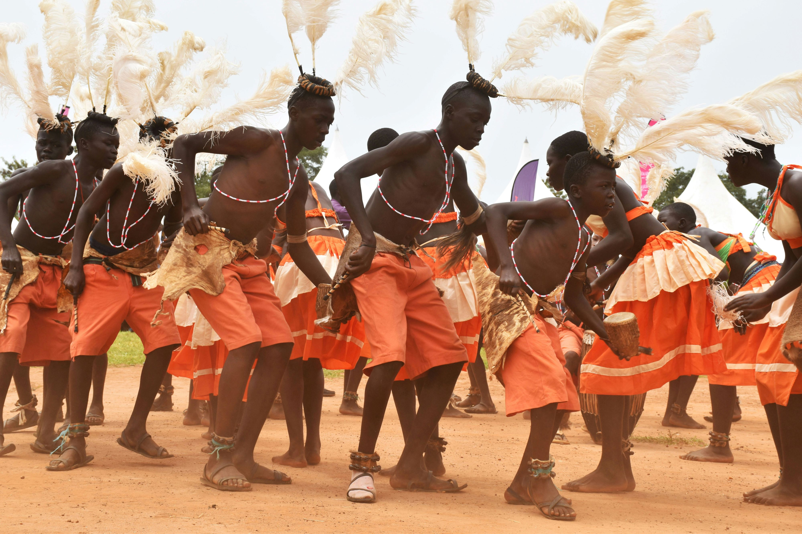

About Me
My name is Jonathan Aloya from Kampala, Uganda. I am lucky to be the 3rd born from the 3 sons of my mother. Currently, I am working as a volunteer in a mentorship program offered by BeSelfless Uganda to the students of BYU-Pathway here in Uganda. I love soccer as a hobby, and I also enjoy watching movies in my leisure time.
 Resource Link 1Uganda - The Pearl of Africa
In 1907, Winston Churchill, who was then an explorer travelling the world, visited Uganda and went on safari. He was blown away. In his book "My African Journey" (1908), Sir Churchill writes about the uniqueness of the country. Uganda actively serves as the home for mountain gorillas and a variety of bird species. The country is also a paradise for food and culture and welcomes all kinds of people from across the world.
  Resource Link 2